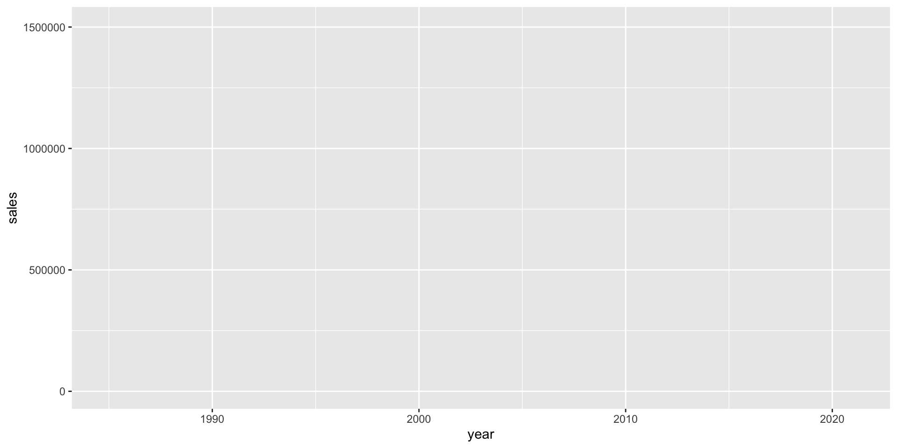
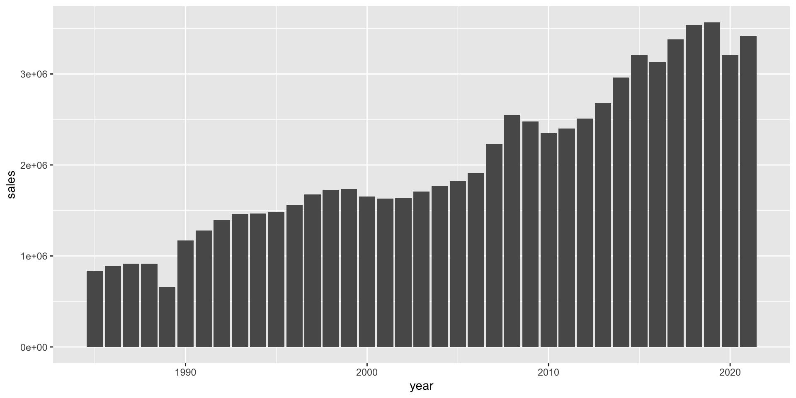
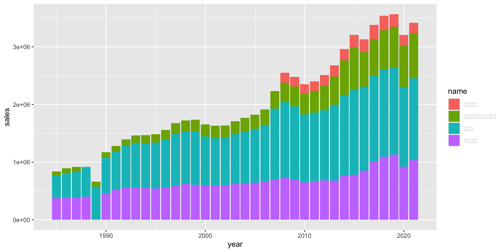
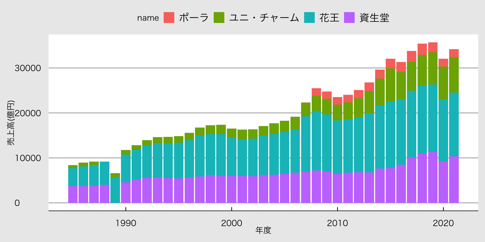
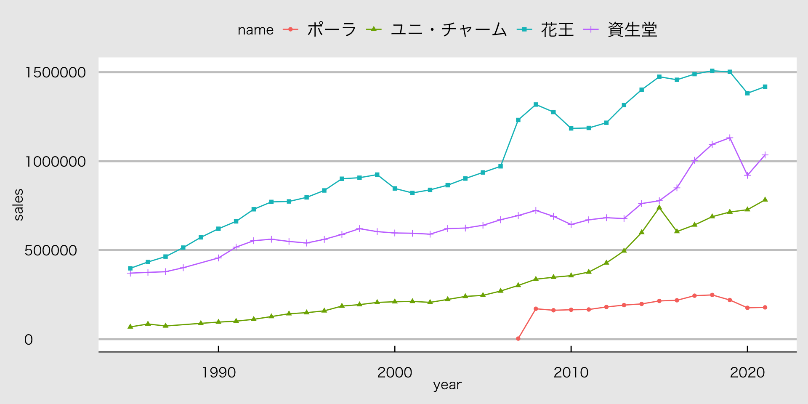
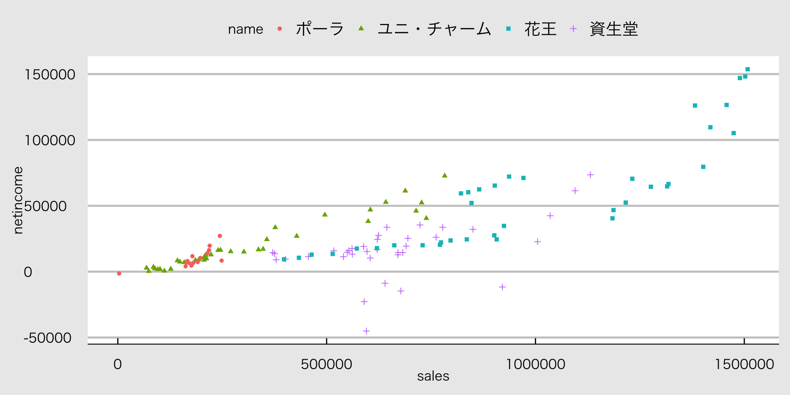

第10回 R言語入門
松浦総一
Rの準備と基本操作
Rの準備 / Posit Cloud
- Posit Cloud(https://posit.cloud/) にアクセス
- 「Sign Up」を選び，アカウントを作成する。
- 右上にある「New Project」を押して，新しいプロジェクトを作成する
- 上部に表示されている「Your Workspace / Untitled Project」のUntitled Projectを適当な名前に変更しておく。

Posit Cloudの画面
左上がソースコードを書くところ，左下がRの画面，右上が変数などが表示されるところ，右下が図表などが表示されるところです。
Rを自分のPCにインストールしたい人向け
ここにあるOS別の「Rのインストール」を参考にしてください。 とくにWindowsの人は設定がかなり面倒なので気をつけて導入してください。
Rの有用ウェブサイト
とりあえず、困ったことがあれば、ここで検索してみましょう。
MS ExcelやSPSSではダメな理由
- MS ExcelやSPSSはGUI(Graphical User Interface)と呼ばれる、マウスで操作するインターフェースを持つソフトウェアなので、操作の履歴を残すことができない。
- クリックする順番を覚えないと、過去に自分が行った分析も再現することができない。
- アプリケーションが重い、ライセンスが厳しい。
- 違法ソフトウェアの使用は犯罪
プログラミング言語を学ぶ理由
MS ExcelやSPSSではなく、わざわざコマンド書かなきゃならないプログラミング言語を分析に使う理由
- 自分が行ったデータ操作や分析のプロセスが記録できる。
- 一度書いたコードを保存しておけば、同じ分析を繰り返すことができる。
- ソースコードの修正が容易である。
- データの取り込みや分析のプロセスを自動化できる。
- メモを残せる
プログラミング言語Ｒの基本
プログラミング言語が得意なこと
パソコンが得意とする作業は、
- 代入する
- 分岐させる
- 繰り返す
- 関数にまとめる
となります。これをRでやってみましょう。
数値を代入する
Rでは、変数に要素を代入するときには、<-を使います。 自分で名前をつけたオブジェクトhensuに数字の1を代入しています。
Rでは#の後に書かれたものはコメントとして扱われ、実行されません。 どんどんコメントを残しておきましょう。
ベクトルを代入する
つぎに、複数の要素をもつベクトル(vector)を作ってみましょう。 ベクトルは、c()の中に要素を入れて作ります。
代入したもの表示させる
オブジェクトの中身を見るには、print()を使います。
class()を使うとオブジェクトの種類を調べることが可能
文字列を代入する
数値以外のものも代入する。
文字列(text)は、""で囲って表現します。
代入する
あまり作ることはないですが、行列を作ってみましょう。
tidyverseをインストール
まずはtidyverseパッケージ群を一括インストールします。 Rでパッケージをインストールするときはinstall.packages()を使い、パッケージを読み込むときはlibrary()を使います。
外部データを取り込んで代入する
松浦のウェブサイトからCSVデータを取ってきて、dfに代入する。 CSVファイルを読み込むには、tidyverseのread_csv()を使います。 ここでは、ウェブサイトにあるデータを読み込んでいるため、URLを指定しています。
データを保存する
データを保存するには、write_csv()を使います。 保存する前に、今Rがどのディレクトリにいるかを確認しておきましょう。
これで今あなたのRが使っているフォルダの場所が分かりました。 そこにデータを保存するには、以下のようにします。
データの中身を見る
データの最初の6行を表示させるには、head()を使います。
# A tibble: 6 × 8
code name term shubetsu ren sales netincome month
<chr> <chr> <chr> <dbl> <dbl> <dbl> <dbl> <dbl>
1 0000641 資生堂 1985/11 10 1 371040 14526 12
2 0000641 資生堂 1986/11 10 1 375294 13632 12
3 0000641 資生堂 1987/11 10 1 378977 9014 12
4 0000641 資生堂 1988/11 10 1 401311 9515 12
5 0000641 資生堂 1989/03 10 1 130654 4265 4
6 0000641 資生堂 1990/03 10 1 456352 11362 12このデータは、化粧品会社のデータです。これからこのデータを使って、企業分析やグラフ作成をしていきます。
データ操作
データを操作する
以下では、手元にあるデータを加工して、分析に適した状態にもっていくまでの処理を学びます。 これらの処理を前処理(preprocessing)と呼びます。 次の前処理を行います。
- データの構造と変数の型を確認する
- 企業名
nameにある長い企業名を短い名前に置き換える。 - 決算月数が12ヶ月未満のデータを除外する
termを年のカテゴリー変数に変換する- 当期純利益
netincomeを売上高salesで割って、利益率を計算する。
データの構造をチェックする
データの構造を確認するためtidyverseのglimplse()を使います。
Rows: 130
Columns: 8
$ code <chr> "0000641", "0000641", "0000641", "0000641", "0000641", "0000…
$ name <chr> "資生堂", "資生堂", "資生堂", "資生堂", "資生堂", "資生堂", …
$ term <chr> "1985/11", "1986/11", "1987/11", "1988/11", "1989/03", "1990…
$ shubetsu <dbl> 10, 10, 10, 10, 10, 10, 10, 10, 10, 10, 10, 10, 10, 10, 10, …
$ ren <dbl> 1, 1, 1, 1, 1, 1, 1, 1, 1, 1, 1, 1, 1, 1, 1, 1, 1, 1, 1, 1, …
$ sales <dbl> 371040, 375294, 378977, 401311, 130654, 456352, 517252, 5532…
$ netincome <dbl> 14526, 13632, 9014, 9515, 4265, 11362, 15850, 16011, 13290, …
$ month <dbl> 12, 12, 12, 12, 4, 12, 12, 12, 12, 12, 12, 12, 12, 12, 12, 1…補足：パイプ演算子
以下では、%>%というパイプ演算子を使います。 パイプ演算子は、前の処理の結果を次の処理に渡すために使います。 パイプ演算子を使うと、処理の流れがわかりやすくなります。
のように使います。
企業名を変更する
変数の値を置き換えたいときは、mutate()とreplace()関数を使います。 mutate()は変数を作成する関数です。 replace()は条件に当てはまる値を置き換える関数です。
まずunique()関数で企業名の種類を確認します。
「ポーラ・オルビスホールディング」は長いので、「ポーラ」に変更します。
補足：mutate()の使い方
mutate()は、変数を作成する関数です。 mutate()の中には、変数名とその変数の値を指定します。 変数の値は、=の右側に書きます。
決算月数が12ヶ月未満のデータを除外する
filter()関数を使って、決算月数が12ヶ月未満のデータを除外します。
データフレームdfのデータのうちtermが12のものだけを抽出して、dfに代入しています。 こうすることで、決算月数monthが12以外のデータは除外されます。
termを年のカテゴリー変数に変換する
termは決算月がyyyy/mmの形式で記録された文字列です。 文字列のままだと、大小関係の無いただの文字なので、ここでは4ケタの数値データに変換します。 まず、yyyy/mmのyyyyだけを取り出し、それをas.numeric()関数で数値に変換します。
利益率を計算する。
利益率は、当期純利益netincomeを売上高salesで割って計算します。 mutate()関数を使って、新しい変数profit_rateを作成します。
今までやった前処理を一気に書く
df <- read_csv("https://so-ichi.com/kesho_2023")
df <- df %>%
filter(month == 12) %>% # 決算月数12ヶ月のみ
mutate(
name = replace(name, name == "ポーラ・オルビスホールディング", "ポーラ"), # 企業名の変更
year = as.numeric(substr(term, 1, 4)), # 決算月数を年に変換
profit_rate = netincome / sales # 利益率の計算
) %>%
select(name, year, sales, netincome, profit_rate) # 変数の選択前処理後のデータの構造を確認します。
Rows: 124
Columns: 5
$ name <chr> "資生堂", "資生堂", "資生堂", "資生堂", "資生堂", "資生堂"…
$ year <dbl> 1985, 1986, 1987, 1988, 1990, 1991, 1992, 1993, 1994, 1995…
$ sales <dbl> 371040, 375294, 378977, 401311, 456352, 517252, 553299, 56…
$ netincome <dbl> 14526, 13632, 9014, 9515, 11362, 15850, 16011, 13290, 1466…
$ profit_rate <dbl> 0.03914942, 0.03632352, 0.02378508, 0.02370979, 0.02489745…グラフを作成
前処理が終わったのでグラフを作成します。 R言語には、グラフ作成の関数として、基本関数plot()と、tidyverseのggplot2があります。 ここでは、ggplot2を使ってグラフを作成していきます。
ggplot2でグラフを作成する際の注意点は、次の3つです。
ggplot()の引数はdata.frameのみaes()を使って、変数を指定する+を使って要素を重ねていく
データを指定する
ggplot()の引数には、data.frameを指定します。 先ほど読み込んだ化粧品会社のデータdfを指定してみましょう。

グラフの下地が作成されました。この上にいろんな要素を重ねていきます。
変数を指定する
横軸と縦軸の変数を指定します。
横軸に年度を表すyear、縦軸に売上高を表すsalesが指定されました。
グラフの種類を指定する
geom_で始まる関数を使って、グラフの種類を指定します。 主要なグラフとして、
geom_bar()棒グラフgeom_line()折れ線グラフgeom_point()散布図geom_histogram()ヒストグラム
があります。 ここでは、棒グラフを作成してみましょう。 棒グラフは、横軸にカテゴリー変数(離散変数)、縦軸に数値をとるグラフです。
棒グラフを作成する
geom_bar()を使って、棒グラフを作成します。 geom_bar()は引数としてstatを取ります。 statは、棒グラフの高さをどのように計算するかを指定します。ここでは売上高の数字をそのまま表示するidentityを指定します。
棒グラフ
企業別の棒グラフ
グラフの見た目を設定
ggplot2では、グラフの見た目を設定するための関数が用意されています。 ここでは、theme()を使って、グラフの見た目を設定していきます。
スタイルを適用
いろんなグラフを作成してみる
研究論文で使うグラフは限られていて、
- 棒グラフ
- 折れ線グラフ
- 散布図
- ヒストグラム
が多いです。 ビジネスの世界では、もう少し数が多く、
- 円グラフ
- 箱ひげ図
- バブルチャート
- レーダーチャート
折れ線グラフ
散布図
利益率のヒストグラム
ヒストグラムは1変数のグラフなので、xのみを指定します。
利益率のヒストグラム2
赤字企業を除去し、区間幅を0.5％にしたヒストグラムを作成します。 処理としては、
dplyr::filter()でprofit_rate > 0となるデータのみを抽出- パイプ演算子で
ggplot()に私、 aes()でprofit_rateを指定し、geom_histogram()でヒストグラムを作成xlab()とylab()で軸の名前を指定